Sky rider waterfalls / Sky rider shield
Rewards:
Ability to upgrade Oceanic lizard shield to Sky rider shield
Side quests:
Botanist’s container 4, Butterfly conservation kit 4
Requirements: Scythe and shovel or Rune of almighty abilities
For upgrade:
Botanist’s container 4 (You’ll find it along the quest)
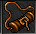Butterfly conservation kit 4 (You’ll find it along the quest)
Oceanic lizard shield
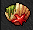About the quest
If you are thinking about doing this quest alone under level 2000 without any information, be prepared to use several hours here. You need to collect 33 coffins in order to be able to upgrade the oceanic shield to sky rider shield. Also you need to find 2 chests along the way but they are the easiest parts of this quest.
It is recommended to get someone who has some knowledge about this quest as it will help you greatly not just in time but clearing the monsters and bosses along the way. There are some spots, from where you can’t get back anymore and you need to start all over again if you miss even 1 coffin as you won’t be able to upgrade the shield otherwise.
There are markings on the map, which indicates which are the coffins and which are the correct path to go.
means there is a coffin you have to touch.
means the way you should go
means there's a lever
Other colours just means there’s the second way you have to go in order to proceed the quest / checkpoint.
Way to waterfalls questing area
As you arrive to fallen gods, open the 3 levers shown in Draconian set to fallen gods set upgrade quest. You can enter the quest area by several ways but here is shown 1 way how to get there. Follow the way from right side and keep following the path as long as you find yourself with ladders going up and teleport ahead. Go ladders up and follow the road to the end. There’s a xapter protecting a teleport. This is where your journey begins.

Waterfalls area 1
Coffins: 5
Before you continue the journey, grab the checkpoint right off the bat you arrive this place. First coffin will be found Northern area, East side. Kill dozens of Osirises and orshabaals to get through there and go West side after that. There’s a hidden stone pile where you need to use rune/shovel in order to get underground.
Now go grab the 2nd coffin from the first corner at the end, head back and move forward to the next corner. Go down, East side has 3rd coffin, West side has the 1st lever.

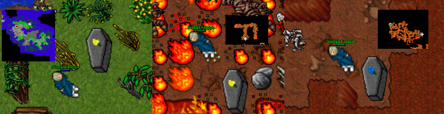
Head back to the main floor and go South. There’s an another stone pile, use rune/shovel there and go underground again. Go full East and South and follow the road to the end to find the 2nd lever. Now you can enter underground place.

So before you go to the teleports after 10 angels of death, go grab the 4th coffin to the West. It’s buried one so be sure to touch it. After that, go South to the teleports, doesn’t matter which one as every single one of them brings you to same spot; with cyclips and arms of wrath.
Go West from there and grab the 5th coffin by the donkey rider. Go ladders up and North-West are another ladders. Follow the road and pull the lever after xarptors. Then you can head South teleport. From this point on, there’s no turning back when you hop into that teleport.
Coffin count: 5
 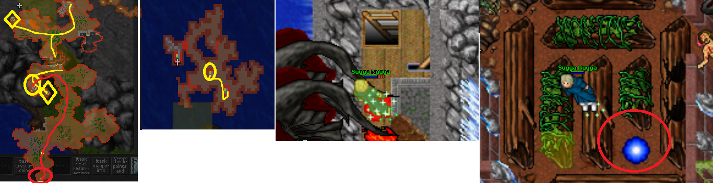
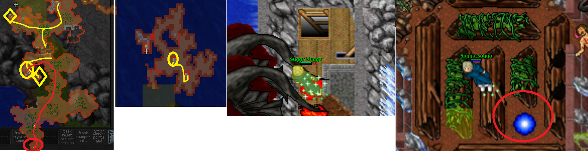Watefalls area 2
Coffins: before checkpoint: 2, before going over the bridge: 9
Now you arrive to a second place. Head out from the mountains and go South to the city first. Grab the 2 coffins there hidden in plain sight. Then go West through the grass by using rune/scythe, pull the lever that is hidden and go past the mountains on West. Take the checkpoint before going any further.
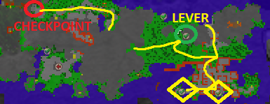


After taking the Checkpoint, you need to find 9 coffins and 3 levers before you can consider passing the bridge. Start South passing the massive demon herds and morgaroths and find an ant trail. Downstairs and to the South-East corner is 1st lever.
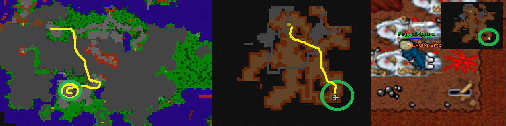
After pulling the lever head back up and go North through the jungle inside the mountain. There’s way down with 2 coffins separated from each other. Grab them and go back up.
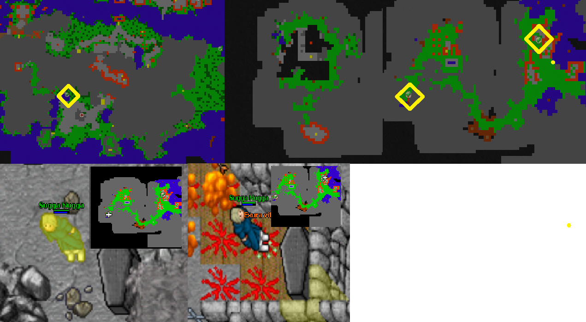
Now head to the tower like place and go upwards. First up, sentinel tower to the North-west, go few ladders up with behelianos and chinese pandas and at the top of the tower 3 helarctoses and coffin.
Other one is to the stairs up with cyclips and other monsters, at the top is some shielded warriors and single xarptor.
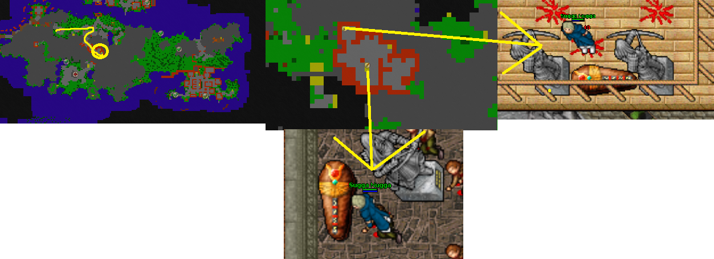
Next up: we are going down. From the tower you just were, go downstairs and first stairs behind down again. Follow the path as shown, follow the road to the end. There’s a cof before the lever with Dark overlord, upstairs the 2nd lever is hidden under the pillar. You can only see it’s tip. DO NOT GO INTO THE RED TELEPORT, IT IS NOT PART OF THE QUEST!

From checkpoint, go same way as the last one but go to the other stairs to the East. You’ll find yourself with some arms of wrath and draconises. For the coffin, go West and down to the hole. For more coffins and lever, go North. Find your way to all of the coffins and the 3rd lever.

Coffins count: 16
Waterfalls area 3: The city
Coffins: 8
As you enter the City area you’ll find alot of different kinds of monsters & bosses here. First up, here’s 6 coffins at the main in the buildings and 1 in the sewers. For the sewer you need to go from East (fastest way) and pull the lever. Then go downstairs and grab the coffin guarded by Cyclip god & red rippers.

After taking the coffins from the city, you need to grab 1 last coffin from this area and pull the lever to continue. The coffin is with 4 wizard of visualises, 4 mungoraths and upstairs with Wizard of Gamma & xarptor.

For the lever go downstairs with lots of holy knights and arms of wrath. There’s a few King roberts and hypergiants. After that downstairs go full North with this 3 sqm narrow path and downstairs again. There’s Hypergiants, vega draconises and Mad cows, that you can’t kill but their summons will annoy you all the time while paralyzing. Just pull the lever and head back.
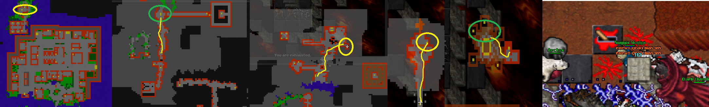
To continue the quest go into the sewer you walked by when went to pull the lever. There’s some easy monsters such as elephants and tigers. Go downstairs and follow the road to the end. There’s also a chest for task item for upgrading the Sky shield. Then just follow the road to the end and go into the teleporter by the Barracuda man. Doesn’t matter which of the 4 you in after that as every single one of them brings you to same place.
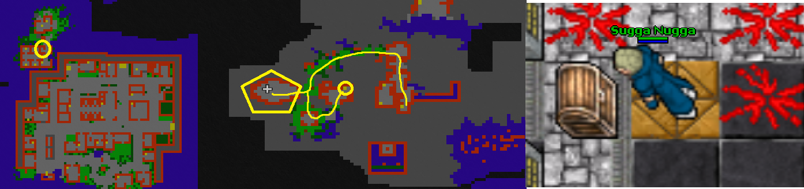
Coffins count: 24
Waterfalls area 4: The Forsaken city
Coffins: 2 + 7
Now you have arrived to the second last place of this quest. At the first area of here you need to take 2 coffins and kill 2 wizard bosses. First up, go downstairs and head West. Watch out for loads of red rippers, pandas, Canopuses and other monsters. If you are lower than 2000 level, it’s going to be hard alone. Grab first buried coffin to the North by the chinese pandas.
Keep going West and kill the Wizardian Schmikkel. After killing the boss, you can either clear all the monsters there to get the other buried coffin or clear after killing the next wizard.

For the next boss, head full East and go into the teleporter. Get in the middle one and go 2 times to get to the boss. There’s Wizardian Hanurs and Butterfly conservation kit 4 chest for the sky shield upgrade.

After killing Hanurs go back from any of the teleports and go North-West corner to the hidden teleport.

Coffins count: 26
Now you’re inside the city. Grab first coffin from the Northern house with Wizard of visualis, then head West. Go upstairs with Evil Limp, go past the bridge and take an another coffin by the Canopus. Downstairs is third boss, Wizardian Durggel. You can kill it now, but you still need the last 5 coffins to go.
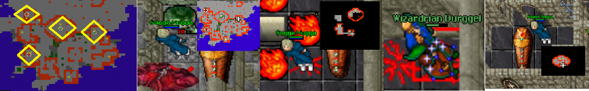
Now to the underground: first up: Vermithrax coffin. Follow the road to the end and you’ll find a teleport with trapped Hypergiant. Go full East and there’s a coffin.

The last 3 coffins are underground at the same place, different rooms.

Coffins count: 33
Waterfalls Final are:
Pretty simple. Get into the teleport underground and go to the end.
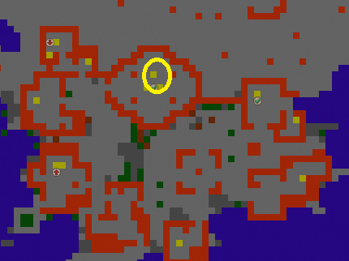

On the way to the upgrade area you'll face The very limps, Surphyre maximuses, Skyrider knights, single Zeta doradus and some The Sky riders.